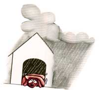
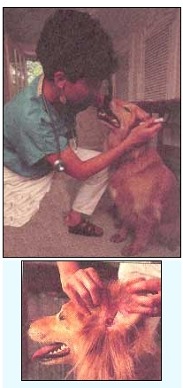
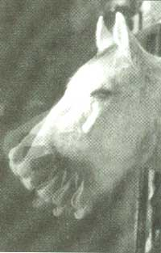
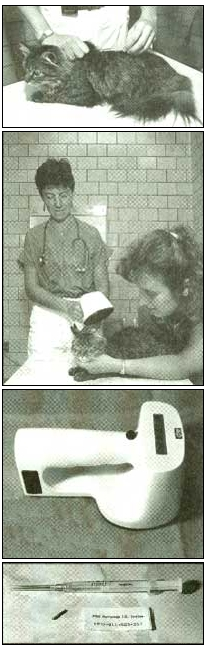

COUNTRY VET
Andrea Looney, DVM, provides a simple solution to soothe your dog's fear of thunder.
By this time, I hope you are all enjoying a wonderful fall. We have been getting some intriguing questions sent to us and I am hoping to receive many more prior to the holiday mail rush. It seems reasonable to focus one of the upcoming issues on behavior problems alone as I have received so many questions dealing with animal behavior and related problems. It's fulfilling to me as veterinarian to realize that so many individuals are attempting to find solutions to their animals’s health and behavior problems. I’ll start this issue with a question concerning thunder phobia in dogs, a common behavior problem this time of the year.
Dear Andrea:
Our German shepherd, Matilda, has always had a fear of thunderstorms. She becomes so agitated that we've considered using tranquilizers just to keep her from laying waste to the house. Do you have any suggestions that are a bit less drastic?
-Jean Simonez
Eugene, OR
Dear Jean:
Many dogs experience fear of thunder, firecrackers, gunshots, and other loud noises. It is not uncommon for these animals to have such stress and anxiety that they endanger the welfare of others and cause property damage while reacting. One way to deal with the phobia of thunder is to tape record a storm occurring. Test to see if the dog will react to this as he does to the real thing. If he does, let some time elapse (one or two weeks) before attempting the following:
Teach the dog to lie down and stay on a favorite rug. Play the recording at very low (inaudible) volume. After five minutes, increase the volume so the thunder is barely audible. If the dog remains calm, give him a food reward. If the dog becomes uncomfortable, try to soothe him.
If the animal becomes very upset, turn the recording down until he relaxes. Proceed with increases in the tape volume very slowly until the dog learns to tolerate the noise, offering a food reward each time the animal remains calm. The whole session should mimic a thunderstorm, so try to limit the listening to under a half hour. Over a period of weeks, repeat the maneuver in different locations, some dark, others with bright lights being turned on and off. In addition, play the tape softly during exercise and at meals, rewarding the animal if no outbursts occur. Drugs may help decrease the anxiety of this desensitizing process but should be used only on maniacal animals.
Dear Andrea:
Our golden retriever, Miguel, gets multiple yeast infections in his ears. We are constantly trying to clean them but the problems recur. Why?
-Joseph K. Banks
Springdale, UT
Dear Joseph:
Many retrievers are predisposed to ear problems. Some dogs via hereditary backgrounds have horrific ear anatomy-very distorted canals, poor membranes, hair in the canal-which creates a perfect moist, dark breeding ground for bacteria and yeast. Other dogs have such severe allergies that their ears and feet become the target itch spots. Most of these animals need not even come in contact with grasses, pollens, or molds; they simply inhale these substances and their ears and feet become red, hot, itchy, and swollen. Yeast infections commonly occur in either of these cases because the allergies or the distorted anatomy cause the pH and the moisture of the ear canal to change. Yeast are simply secondary invaders and are taking advantage of a high-pH, moist spot to grow and cause problems.
Most dogs's ears are better left alone if the animal does not seem to be in any pain or discomfort. Even the simplest treatment or cleaning (with mineral oil, baby oil, or alcohol) can harm the canal, cause inflammation, and carry an infection deeper into the inner ear.
A general cleanser safe for the inside of the ear flap and the outer part of the canal is a 50/50 mixture of vinegar and water. I never recommend pouring anything into the canal in case the eardrum is torn, but it is OK to apply this to a cotton ball and clean the ear carefully. The vinegar provides a pH that is conducive to good bacteria and very few yeast-things that normally live in a healthy ear. This simple formulation is useful for most labs and retrievers, and helps prevent yeast infections or "overgrowths" which commonly occur in the spring and fall.
Dear Andrea:
I've heard dozens of rumors on how to best deworm a horse. What do you think is an appropriate schedule?
-Heather James
Alpena, MI
Dear Heather:
There are a slew of common misconceptions about deworming plans for farm animals. Since parasites are a top cause of unthriftiness, weight loss, poor exercise performance, and colic, it's worthwhile to entertain a few of these "myths" and understand what current "realities" are behind them.
For instance, repeated deworming was thought to be the most effective method of worm control. In actuality, seasonal deworming (performing in the spring and summer) is just as effective as year-round treatments. And believe it or not, twice weekly removal of manure is even more effective than seasonal deworming. It was once thought that rapid rotation or changing of deworming drugs every few months prevents the worms from becoming resistant. However, this common practice of rotating dewormers at every treatment or several times a year has been associated with the rapid spread of drug-resistant worms in horses. You are far better off annually changing the medications you use and using only one, not a combination of dewormers, each year. The more frequently the same medication is used, the faster drug resistance will develop.
What's better, paste or tube dewormers? Tube dewormers are those liquid emulsions generally administered by your veterinarian via a nasogastric tube. Paste dewormers come in an oversized syringe and can be given directly in the mouth versus down the nose (like the tube dewormers). Paste dewormers have been found to be as effective, and safer and easier than tube dewormers.
A common myth is that the large strongyles are the most important worms to go after in horses. In reality, there has been a dramatic drop in their prevalence since the advent of modern dewormers in the 1960s. While they are still around, using deworming medications which only treat these parasites probably overlooks other more common pests in your horse's gastrointestinal tract.
People also may have heard that winter and frost commonly kill the parasites living in the pasture. Subzero temperatures and heavy snowfalls have very little adverse effect on encysted infective larvae in the pasture. These resistant forms of worms generally survive even over winter months. Harrowing is beneficial-especially when the weather is hot and dry as it exposes the eggs and larvae in the pasture to sunlight and drying (the best deworming agents!). Plowing during very damp conditions simply spreads viable larvae and makes living conditions more beneficial for them.
Dear Andrea:
Our horse is a "headshaker." We have been unable to see any flies, mites, or ticks in and around his ears. What else causes this nasty vice?
-Ross Duncan
Hondo, NM
Dear Ross:
"Headshaking" refers to an abnormal condition when a horse shakes its head in the absence of any obvious cause, and with such frequency and violence that it becomes dangerous and distressed. It is one of the most poorly understood conditions plaguing horses and a cause of great frustration to owners and veterinarians alike. It is a disease which appears to be seasonal, being worse in the spring and fall, yet disappearing in winter. Signs are observed mostly at exercise but can become progressively worse.
A list of the potential causes of head-shaking includes allergies, sinus disease, nerve sensation, inner ear or guttural pouch disease, cysts of the eyes and ears, moon blindness, dental pain, or skeletal/muscle pain in the neck. Allergies are one of the most likely causes of headshaking, with tree pollens in early spring, grass pollens in the early summer, and molds in the fall being likely culprits.
Intolerance of the bit or problems with tack are also frequently blamed as causes of headshaking. Lunge the horse, with and without a bit in its mouth or tack on, and see if it makes a difference. If the problem persists once equipment problems have been eliminated, your veterinarian may opt to perform some endoscopy (internal visual examination using specialized halogen lighting) or X-rays to check for other medical causes. A nerve block may be used diagnostically or as treatment for the condition at times.
Now it is possible to painlessly inject a microchip into your pet.…..which vets and police can scan with special equipment (left) to immediately trace your lost or stolen animal.
Medical therapy of suspected allergic conditions has been largely unrewarding, but your veterinarian may be able to suggest appropriate antihistamines or bronchodilators which may help. Another alternative is to completely alter the animal's environment where he lives and exercises; chances are that you'll leave the allergic substance behind. If you highly suspect allergies are the problem, you may alleviate the signs, albeit temporary, by hanging a piece of muslin or fine mesh from the bridle or halter, letting it fall over the nostrils, to filter out the pollens and keep insects out of the nose.
Dear Andrea:
Our sow has been lame on her front leg for over two months. Would antibiotics help?
-Jane Hilzer
Wausau, WI
Dear Jane:
My experience with lame pigs is that most cases are not related to infections and few respond to antibiotics. The focus then should be on determining if it's worth treating the individual pig and correcting the management factors which may be responsible for the lameness. If the sow is an older, open animal or one that has had poor reproductive history regardless of age, culling may be more appropriate than treatment. Treating a chronic lameness can lead to weight loss and decreased reproductive performance.
Examine the environment of this sow. Some pigs do poorly on new concrete. Others do poorly on floors that are constantly moist. Are the slats in the floors poorly maintained? Are there any rough, protruding objects in the fencing that could cause injury or constant straining of ligaments and tendons?
Try moving the female from a gestation crate to a pen. The ability to exercise or increase activity often helps a great deal. Create a cleaner environment with fresh air for her to be housed in temporarily. Try to reduce the stress in her life as much as possible. You can use steroids and aspirin-like medications to decrease inflammation, reduce pain, and increase appetite, but they often "mask" pain and may induce gastric ulcers. If antibiotics are necessary, contact your veterinarian for an appropriate treatment with a short withdrawal time.
Dear Andrea:
Our cats spend days and nights outdoors. Each time I get them identification collars, they quickly remove them, even the elastic ones. Are there other options?
-Allison Anne Arnold
Berwyn Heights, MD
Dear Allison:
Animal identification has always been a concern for veterinarians and pet owners. Countless lost-pet signs and ads in the newspaper attest to this fact. Many new solutions to easy pet identification now exist. Identification tags and tattooing are well known solutions. Many folks do not like using ID tags as they are accustomed to using a collar, which though effective, might strangle or entangle an animal. I have not seen this happen, although I'm sure it's a possibility. However, cats seem very adept at wiggling out of these and harnesses as well. If the cat is an outdoor animal, the owners must check the skin and hair of collared animals regularly for abrasion of the skin or loss of hair. Most animals receive an ID tag upon getting vaccinated for rabies. A number on this tag is recorded at the office of the veterinarian and serves to locally identify the pet. Tattooing is an effective permanent method of pet identification but requires special equipment and general anesthesia. The American Pet Association has one of the most comprehensive national tattoo registries.
Microchip identification is rapidly becoming one of the most nationally recognized methods of pet identification. Microelectronic technology has enabled veterinarians to inject tiny biocompatible pieces of glass under the skin of pets and zoo animals. These microchips are about the size of a grain of rice and each broadcasts a radio wave containing information about the pet's owner, address, phone number, and pertinent medical needs. A hand-held reader, owned by many humane societies, SPCAs, and veterinarians, "scans" the microchip and transmits the info to a computer screen to identify the lost pet. The microchips are safe, inexpensive, and are a promising deterrent to pet theft and loss nationally. The hitch, of course, is that they will be of significantly less help if a neighbor five miles down the road happens to find your lost pet instead of a vet or the police. In those instances, the tried and true technique of keeping a secure collar on your dog or cat is still hard to beat.
|
 Retrievers, in particular, have ear anatomy that encourages ear infections. |
 |
 |
|
 |
|
|